🚲 Lane data QA — aerial review
900 network sites audited against MassGIS 15 cm orthoimagery
(2023 vs 2025): 686 ok, 70 changed,
77 without visible markings,
0 without imagery. 900 of the deduped facility sites audited; rerun with --max-sites to extend (tiles are cached)
These are heuristic flags for human review — confirm with the linked
street-level photos, then record real changes in
data/overrides.geojson (class overrides feed the router directly).
🔀 markings changed 2023 → 2025 A Street — lane (source: osm)
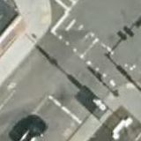
2023 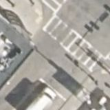
2025 green 0.0 → 0.0 · white 0.0464 → 0.488
🔀 markings changed 2023 → 2025 A Street — separated (source: osm)
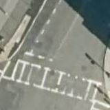
2023 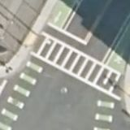
2025 green 0.0 → 0.0 · white 0.0772 → 0.3347
🔀 markings changed 2023 → 2025 Acorn Park Drive — lane (source: osm)
2023 2025 green 0.0 → 0.0 · white 0.1386 → 0.4113
🔀 markings changed 2023 → 2025 Acorn Park Drive — lane (source: osm)
2023 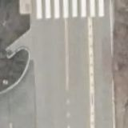
2025 green 0.0 → 0.0 · white 0.1017 → 0.3816
🔀 markings changed 2023 → 2025 Acorn Park Drive — lane (source: osm)
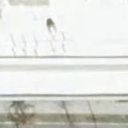
2023 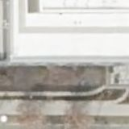
2025 green 0.0 → 0.0 · white 0.9817 → 0.5184
🔀 markings changed 2023 → 2025 Beacon Street — separated (source: osm)
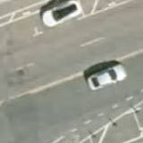
2023 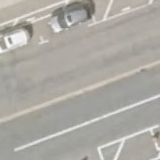
2025 green 0.0 → 0.0 · white 0.0777 → 0.4347
🔀 markings changed 2023 → 2025 Berkeley Street — separated (source: osm)
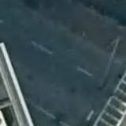
2023 2025 green 0.0 → 0.0 · white 0.0 → 0.347
🔀 markings changed 2023 → 2025 Blanchard Road — lane (source: osm)
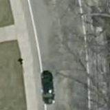
2023 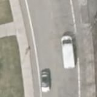
2025 green 0.0 → 0.0 · white 0.0997 → 0.6584
🔀 markings changed 2023 → 2025 Broadway — lane (source: osm)
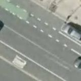
2023 2025 green 0.0 → 0.0 · white 0.038 → 0.4317
🔀 markings changed 2023 → 2025 Broadway — lane (source: osm)
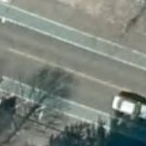
2023 2025 green 0.0 → 0.0 · white 0.0425 → 0.2895
🔀 markings changed 2023 → 2025 Broadway — lane (source: osm)
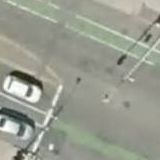
2023 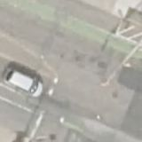
2025 green 0.0 → 0.0 · white 0.0633 → 0.5455
🔀 markings changed 2023 → 2025 Broadway — separated (source: osm)
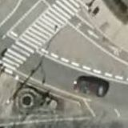
2023 2025 green 0.0 → 0.0 · white 0.1669 → 0.4808
🔀 markings changed 2023 → 2025 Broadway — lane (source: osm)
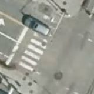
2023 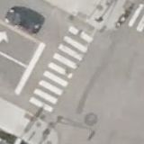
2025 green 0.0 → 0.0 · white 0.2106 → 0.4514
🔀 markings changed 2023 → 2025 Brookline Avenue — lane (source: osm)
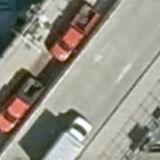
2023 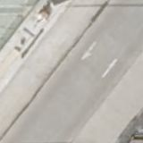
2025 green 0.0 → 0.0 · white 0.6152 → 0.8958
🔀 markings changed 2023 → 2025 Cambridge Street — lane (source: osm)
green 0.0 → 0.0 · white 0.6578 → 0.9361
🔀 markings changed 2023 → 2025 Cameron Avenue — lane (source: osm)
2023 2025 green 0.0013 → 0.0 · white 0.1439 → 0.4228
🔀 markings changed 2023 → 2025 Causeway Street — separated (source: osm)
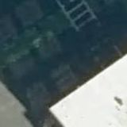
2023 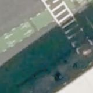
2025 green 0.0034 → 0.1778 · white 0.0628 → 0.0309
🔀 markings changed 2023 → 2025 Chestnut Hill Avenue — lane (source: osm)
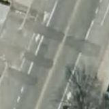
2023 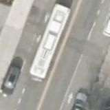
2025 green 0.0 → 0.0 · white 0.0552 → 0.3864
🔀 markings changed 2023 → 2025 Columbus Avenue — lane (source: osm)
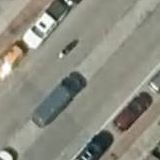
2023 2025 green 0.0 → 0.0 · white 0.0184 → 0.3278
🔀 markings changed 2023 → 2025 Columbus Avenue — separated (source: osm)
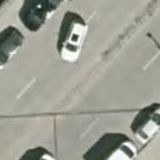
2023 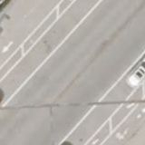
2025 green 0.0 → 0.0 · white 0.3456 → 0.618
🔀 markings changed 2023 → 2025 Commonwealth Avenue — lane (source: osm)
2023 2025 green 0.0 → 0.0 · white 0.0878 → 0.4939
🔀 markings changed 2023 → 2025 Concord Avenue — lane (source: osm)
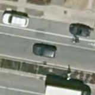
2023 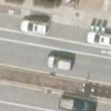
2025 green 0.0 → 0.0 · white 0.0972 → 0.5025
🔀 markings changed 2023 → 2025 Concord Avenue — separated (source: osm)
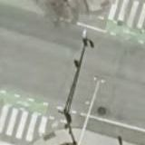
2023 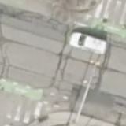
2025 green 0.0 → 0.0 · white 0.0441 → 0.5787
🔀 markings changed 2023 → 2025 Cutter Avenue — lane (source: osm)
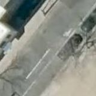
2023 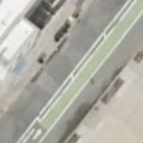
2025 green 0.0 → 0.0 · white 0.1142 → 0.3887
🔀 markings changed 2023 → 2025 Dalton Street — separated (source: osm)
2023 2025 green 0.0005 → 0.0 · white 0.3016 → 0.003
🔀 markings changed 2023 → 2025 Dorchester Avenue — lane (source: osm)
green 0.0 → 0.0 · white 0.2398 → 0.9228
🔀 markings changed 2023 → 2025 Dorchester Avenue — lane (source: osm)
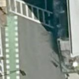
2023 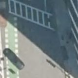
2025 green 0.0041 → 0.0 · white 0.0095 → 0.2427
🔀 markings changed 2023 → 2025 Eliot Street — lane (source: osm)
2023 2025 green 0.0 → 0.0 · white 0.0702 → 0.4297
🔀 markings changed 2023 → 2025 Everett Street — lane (source: osm)
2023 2025 green 0.0 → 0.0 · white 0.0614 → 0.3453
🔀 markings changed 2023 → 2025 Foley Street — separated (source: osm)
green 0.0 → 0.0 · white 0.4566 → 0.0555
🔀 markings changed 2023 → 2025 Hampshire Street — separated (source: osm)
2023 2025 green 0.0 → 0.0 · white 0.415 → 0.057
🔀 markings changed 2023 → 2025 Huron Avenue — separated (source: osm)
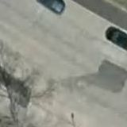
2023 2025 green 0.0 → 0.0 · white 0.0088 → 0.3144
🔀 markings changed 2023 → 2025 Lake Street — lane (source: osm)
2023 2025 green 0.0 → 0.0 · white 0.1688 → 0.5017
🔀 markings changed 2023 → 2025 Main Street — separated (source: osm)
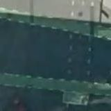
2023 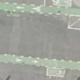
2025 green 0.0759 → 0.0 · white 0.0 → 0.0486
🔀 markings changed 2023 → 2025 Main Street — lane (source: osm)
2023 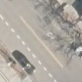
2025 green 0.0003 → 0.0 · white 0.0925 → 0.7395
🔀 markings changed 2023 → 2025 Main Street — lane (source: osm)
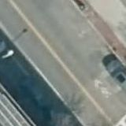
2023 2025 green 0.0 → 0.0 · white 0.0634 → 0.4359
🔀 markings changed 2023 → 2025 Main Street — lane (source: osm)
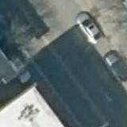
2023 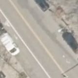
2025 green 0.0 → 0.0 · white 0.0325 → 0.9116
🔀 markings changed 2023 → 2025 Main Street — lane (source: osm)
green 0.0 → 0.0 · white 0.0541 → 0.6633
🔀 markings changed 2023 → 2025 Main Street — lane (source: osm)
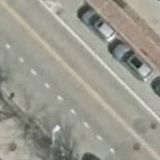
2023 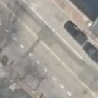
2025 green 0.0 → 0.0 · white 0.1548 → 0.5837
🔀 markings changed 2023 → 2025 Main Street — lane (source: osm)
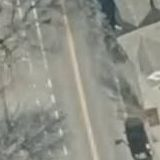
2023 2025 green 0.0 → 0.0 · white 0.0834 → 0.5731
🔀 markings changed 2023 → 2025 Market Street — lane (source: osm)
2023 2025 green 0.0 → 0.0 · white 0.0492 → 0.5502
🔀 markings changed 2023 → 2025 Massachusetts Avenue — separated (source: osm)
2023 2025 green 0.0 → 0.0006 · white 0.4252 → 0.0141
🔀 markings changed 2023 → 2025 Massachusetts Avenue — separated (source: osm)
2023 2025
green 0.0 → 0.0 · white 0.2306 → 0.5755
🔀 markings changed 2023 → 2025 Massachusetts Avenue — lane (source: osm)
2023 2025 green 0.0 → 0.0 · white 0.15 → 0.8334
🔀 markings changed 2023 → 2025 Massachusetts Avenue — lane (source: osm)
2023 2025 green 0.0 → 0.0 · white 0.1114 → 0.5194
🔀 markings changed 2023 → 2025 Massachusetts Avenue — lane (source: osm)
2023 2025 green 0.0 → 0.0 · white 0.0984 → 0.537
🔀 markings changed 2023 → 2025 Massachusetts Avenue — separated (source: osm)
2023 2025
green 0.0 → 0.0 · white 0.1659 → 0.8486
🔀 markings changed 2023 → 2025 McGrath Highway — separated (source: osm)
2023 2025
green 0.0 → 0.0 · white 0.8817 → 0.2387
🔀 markings changed 2023 → 2025 Milk Street — separated (source: osm)
2023 2025 green 0.0 → 0.0 · white 0.0678 → 0.3244
🔀 markings changed 2023 → 2025 Mount Auburn Street — lane (source: osm)
2023 2025 green 0.0 → 0.0 · white 0.0887 → 0.5375
🔀 markings changed 2023 → 2025 Mount Auburn Street — lane (source: osm)
2023 2025
green 0.0 → 0.0 · white 0.0192 → 0.3267
🔀 markings changed 2023 → 2025 Mount Auburn Street — separated (source: osm)
2023 2025 green 0.0 → 0.0 · white 0.0919 → 0.4169
🔀 markings changed 2023 → 2025 Mount Auburn Street — separated (source: osm)
2023 2025 green 0.0 → 0.0 · white 0.04 → 0.8275
🔀 markings changed 2023 → 2025 New Cypher Street — separated (source: osm)
2023 2025 green 0.0 → 0.0 · white 0.0712 → 0.3323
🔀 markings changed 2023 → 2025 North Beacon Street — separated (source: osm)
2023 2025 green 0.0 → 0.0 · white 0.0528 → 0.2916
🔀 markings changed 2023 → 2025 North Beacon Street — separated (source: osm)
2023 2025 green 0.0 → 0.0 · white 0.0459 → 0.4469
🔀 markings changed 2023 → 2025 North Harvard Street — lane (source: osm)
2023 2025
green 0.0 → 0.0 · white 0.2602 → 0.6236
🔀 markings changed 2023 → 2025 Park Plaza — lane (source: osm)
2023 2025 green 0.0 → 0.0 · white 0.03 → 0.583
🔀 markings changed 2023 → 2025 Pleasant Street — lane (source: osm)
2023 2025
green 0.0008 → 0.0 · white 0.1108 → 0.4284
🔀 markings changed 2023 → 2025 Somerville Avenue — lane (source: osm)
2023 2025 green 0.0011 → 0.0 · white 0.0312 → 0.3886
🔀 markings changed 2023 → 2025 Somerville Avenue — lane (source: osm)
2023 2025
green 0.0 → 0.0 · white 0.0478 → 0.3655
🔀 markings changed 2023 → 2025 Somerville Avenue — separated (source: osm)
2023 2025
green 0.0 → 0.0 · white 0.1867 → 0.7581
🔀 markings changed 2023 → 2025 Tremont Street — separated (source: osm)
2023 2025 green 0.0 → 0.0 · white 0.0041 → 0.2289
🔀 markings changed 2023 → 2025 Vassar Street — separated (source: osm)
2023 2025 green 0.0067 → 0.0 · white 0.0063 → 0.3514
🔀 markings changed 2023 → 2025 Washington Street — separated (source: osm)
2023 2025 green 0.0 → 0.0 · white 0.2006 → 0.4575
🔀 markings changed 2023 → 2025 Washington Street — separated (source: osm)
2023 2025
green 0.0 → 0.0 · white 0.1392 → 0.5091
🔀 markings changed 2023 → 2025 Washington Street — lane (source: osm)
2023 2025 green 0.0 → 0.0 · white 0.0852 → 0.472
🔀 markings changed 2023 → 2025 Western Avenue — separated (source: osm)
2023 2025
green 0.0 → 0.0 · white 0.247 → 0.7197
🔀 markings changed 2023 → 2025 Willow Avenue — lane (source: osm)
2023 2025 green 0.0 → 0.0 · white 0.1167 → 0.337
🔀 markings changed 2023 → 2025 Winship Street — separated (source: osm)
2023 2025 green 0.0 → 0.0 · white 0.0364 → 0.3502
❓ painted facility, no visible markings A Street — separated (source: osm)
2023 2025
green 0.0 → 0.0 · white 0.0 → 0.0
❓ painted facility, no visible markings Acorn Park Drive — lane (source: osm)
2023 2025 green 0.0002 → 0.0 · white 0.0 → 0.003
❓ painted facility, no visible markings Arlington Street — separated (source: osm)
2023 2025 green 0.0017 → 0.0019 · white 0.1069 → 0.0009
❓ painted facility, no visible markings Arlington Street — separated (source: osm)
2023 2025 green 0.0 → 0.0 · white 0.0141 → 0.0
❓ painted facility, no visible markings Beacon Street — lane (source: osm)
2023 2025
green 0.028 → 0.0016 · white 0.0148 → 0.0037
❓ painted facility, no visible markings Beacon Street — separated (source: osm)
2023 2025 green 0.0066 → 0.0 · white 0.0119 → 0.0036
❓ painted facility, no visible markings Beacon Street — separated (source: osm)
2023 2025
green 0.0 → 0.0 · white 0.0011 → 0.0014
❓ painted facility, no visible markings Belvidere Street — lane (source: osm)
2023 2025 green 0.0 → 0.0014 · white 0.0147 → 0.0017
❓ painted facility, no visible markings Berkeley Street — separated (source: osm)
2023 2025 green 0.0 → 0.0013 · white 0.0053 → 0.0
❓ painted facility, no visible markings Berkeley Street — separated (source: osm)
2023 2025 green 0.0 → 0.0 · white 0.0484 → 0.0
❓ painted facility, no visible markings Blanchard Road — lane (source: osm)
2023 2025
green 0.0 → 0.0 · white 0.0 → 0.0016
❓ painted facility, no visible markings Boylston Street — separated (source: osm)
2023 2025 green 0.005 → 0.0095 · white 0.0064 → 0.0109
❓ painted facility, no visible markings Boylston Street — separated (source: osm)
2023 2025 green 0.0 → 0.0047 · white 0.0413 → 0.0
❓ painted facility, no visible markings Brighton Avenue — lane (source: osm)
2023 2025 green 0.0 → 0.0 · white 0.0242 → 0.0
❓ painted facility, no visible markings Brookline Street — lane (source: osm)
2023 2025
green 0.0058 → 0.0 · white 0.0058 → 0.0109
❓ painted facility, no visible markings Brookline Street — lane (source: osm)
2023 2025 green 0.0 → 0.0 · white 0.0191 → 0.002
❓ painted facility, no visible markings Brookline Street — lane (source: osm)
2023 2025 green 0.0 → 0.0 · white 0.0723 → 0.0073
❓ painted facility, no visible markings Cambridge Street — separated (source: osm)
2023 2025 green 0.0017 → 0.0 · white 0.0081 → 0.0
❓ painted facility, no visible markings Cambridge Street — lane (source: osm)
2023 2025 green 0.0 → 0.0 · white 0.0531 → 0.0053
❓ painted facility, no visible markings Cambridge Street — lane (source: osm)
2023 2025 green 0.0 → 0.0 · white 0.0817 → 0.008
❓ painted facility, no visible markings Cambridge Street — lane (source: osm)
2023 2025
green 0.0 → 0.0 · white 0.0636 → 0.0
❓ painted facility, no visible markings Central Street — separated (source: osm)
2023 2025 green 0.0011 → 0.0 · white 0.0114 → 0.0128
❓ painted facility, no visible markings Chestnut Hill Avenue — lane (source: osm)
2023 2025
green 0.0 → 0.0 · white 0.0009 → 0.0075
❓ painted facility, no visible markings Columbus Avenue — lane (source: osm)
2023 2025
green 0.0 → 0.0 · white 0.0 → 0.0
❓ painted facility, no visible markings Commonwealth Avenue — lane (source: osm)
2023 2025 green 0.0 → 0.0 · white 0.0044 → 0.0136
❓ painted facility, no visible markings Commonwealth Avenue — lane (source: osm)
2023 2025 green 0.0002 → 0.0 · white 0.0041 → 0.0145
❓ painted facility, no visible markings Commonwealth Avenue — lane (source: osm)
2023 2025
green 0.0 → 0.0008 · white 0.0006 → 0.0008
❓ painted facility, no visible markings Commonwealth Avenue — lane (source: osm)
2023 2025 green 0.0 → 0.0 · white 0.0013 → 0.003
❓ painted facility, no visible markings Concord Avenue — separated (source: osm)
2023 2025
green 0.0 → 0.0 · white 0.0259 → 0.008
❓ painted facility, no visible markings Congress Street — lane (source: osm)
2023 2025 green 0.0 → 0.0 · white 0.1098 → 0.0003
❓ painted facility, no visible markings Dartmouth Street — separated (source: osm)
2023 2025 green 0.0 → 0.0 · white 0.1058 → 0.0083
❓ painted facility, no visible markings Fountain Terrace — lane (source: osm)
2023 2025 green 0.0 → 0.0 · white 0.0069 → 0.0073
❓ painted facility, no visible markings Hampshire Street — separated (source: osm)
2023 2025 green 0.0 → 0.0002 · white 0.2191 → 0.0081
❓ painted facility, no visible markings Harrison Avenue — lane (source: osm)
2023 2025 green 0.0 → 0.0009 · white 0.0775 → 0.0027
❓ painted facility, no visible markings Harvard Avenue — lane (source: osm)
2023 2025 green 0.0 → 0.0 · white 0.0005 → 0.0006
❓ painted facility, no visible markings Harvard Avenue — lane (source: osm)
2023 2025 green 0.0017 → 0.0 · white 0.0 → 0.0105
❓ painted facility, no visible markings Harvard Street — lane (source: osm)
2023 2025 green 0.0 → 0.0037 · white 0.0477 → 0.0122
❓ painted facility, no visible markings Harvard Street — lane (source: osm)
2023 2025 green 0.0 → 0.0 · white 0.0289 → 0.0064
❓ painted facility, no visible markings Harvard Street — lane (source: osm)
2023 2025 green 0.0 → 0.0 · white 0.0034 → 0.0102
❓ painted facility, no visible markings Harvard Street — lane (source: osm)
2023 2025 green 0.0 → 0.002 · white 0.0378 → 0.0061
❓ painted facility, no visible markings Hereford Street — lane (source: osm)
2023 2025 green 0.0 → 0.0 · white 0.0802 → 0.013
❓ painted facility, no visible markings Huron Avenue — lane (source: osm)
2023 2025
green 0.0 → 0.0 · white 0.022 → 0.0133
❓ painted facility, no visible markings John F. Kennedy Street — lane (source: osm)
2023 2025 green 0.0 → 0.0 · white 0.0095 → 0.0084
❓ painted facility, no visible markings Kilmarnock Street — lane (source: osm)
2023 2025 green 0.0 → 0.0006 · white 0.0194 → 0.0
❓ painted facility, no visible markings Lake Street — lane (source: osm)
2023 2025 green 0.0 → 0.0 · white 0.0 → 0.0
❓ painted facility, no visible markings Lake Street — lane (source: osm)
2023 2025 green 0.0 → 0.0 · white 0.0017 → 0.0
❓ painted facility, no visible markings Linskey Way — lane (source: osm)
2023 2025 green 0.0 → 0.0 · white 0.0 → 0.0
❓ painted facility, no visible markings Main Street — lane (source: osm)
2023 2025 green 0.0 → 0.0022 · white 0.0 → 0.0053
❓ painted facility, no visible markings Main Street — separated (source: osm)
2023 2025
green 0.0 → 0.0 · white 0.0 → 0.0
❓ painted facility, no visible markings Main Street — lane (source: osm)
2023 2025 green 0.0 → 0.0 · white 0.2134 → 0.013
❓ painted facility, no visible markings Main Street — lane (source: osm)
2023 2025
green 0.0 → 0.0 · white 0.0017 → 0.0102
❓ painted facility, no visible markings Massachusetts Avenue — separated (source: osm)
2023 2025
green 0.0005 → 0.0 · white 0.0544 → 0.0002
❓ painted facility, no visible markings Massachusetts Avenue — separated (source: osm)
2023 2025 green 0.0 → 0.0 · white 0.0436 → 0.0056
❓ painted facility, no visible markings Massachusetts Avenue — separated (source: osm)
2023 2025
green 0.0 → 0.0 · white 0.065 → 0.012
❓ painted facility, no visible markings Massachusetts Avenue — separated (source: osm)
2023 2025 green 0.0 → 0.0 · white 0.0153 → 0.0
❓ painted facility, no visible markings Medford Street — separated (source: osm)
2023 2025 green 0.0 → 0.0 · white 0.1322 → 0.0
❓ painted facility, no visible markings Mount Auburn Street — lane (source: osm)
2023 2025
green 0.0 → 0.0 · white 0.0009 → 0.0008
❓ painted facility, no visible markings Mount Auburn Street — lane (source: osm)
2023 2025
green 0.0 → 0.0 · white 0.0041 → 0.0133
❓ painted facility, no visible markings Mountfort Street — lane (source: osm)
2023 2025
green 0.0 → 0.0 · white 0.0077 → 0.0
❓ painted facility, no visible markings New Cypher Street — separated (source: osm)
2023 2025 green 0.0 → 0.0 · white 0.0 → 0.0077
❓ painted facility, no visible markings North Beacon Street — separated (source: osm)
2023 2025
green 0.0 → 0.0 · white 0.0 → 0.0
❓ painted facility, no visible markings North First Street — separated (source: osm)
2023 2025 green 0.0 → 0.0 · white 0.0617 → 0.0
❓ painted facility, no visible markings Pearl Street — lane (source: osm)
2023 2025 green 0.0 → 0.0 · white 0.047 → 0.0131
❓ painted facility, no visible markings Somerville Avenue — lane (source: osm)
2023 2025 green 0.0 → 0.0 · white 0.0 → 0.0
❓ painted facility, no visible markings Sparks Street — lane (source: osm)
2023 2025 green 0.0366 → 0.003 · white 0.0005 → 0.0011
❓ painted facility, no visible markings Staniford Street — separated (source: osm)
2023 2025 green 0.0 → 0.0 · white 0.0 → 0.0108
❓ painted facility, no visible markings Staniford Street — separated (source: osm)
2023 2025 green 0.0 → 0.0 · white 0.1109 → 0.0142
❓ painted facility, no visible markings Staniford Street — separated (source: osm)
2023 2025 green 0.0 → 0.0 · white 0.0 → 0.0097
❓ painted facility, no visible markings Summer Street — separated (source: osm)
2023 2025
green 0.0 → 0.0 · white 0.0647 → 0.0078
❓ painted facility, no visible markings Tremont Street — separated (source: osm)
2023 2025 green 0.0003 → 0.0 · white 0.0658 → 0.0
❓ painted facility, no visible markings Warren Street — lane (source: osm)
2023 2025 green 0.0003 → 0.0006 · white 0.0278 → 0.0117
❓ painted facility, no visible markings Washington Street — separated (source: osm)
2023 2025 green 0.0008 → 0.0084 · white 0.1013 → 0.0008
❓ painted facility, no visible markings Webster Avenue — lane (source: osm)
2023 2025
green 0.0 → 0.0 · white 0.0781 → 0.002
❓ painted facility, no visible markings Western Avenue — separated (source: osm)
2023 2025 green 0.0 → 0.0 · white 0.108 → 0.0091
❓ painted facility, no visible markings Western Avenue — separated (source: osm)
2023 2025
green 0.0 → 0.0 · white 0.0759 → 0.0009
❓ painted facility, no visible markings Western Avenue — separated (source: osm)
2023 2025
green 0.0 → 0.0 · white 0.0 → 0.0077
❓ painted facility, no visible markings Windsor Street — separated (source: osm)
2023 2025 green 0.0 → 0.0 · white 0.0019 → 0.0052